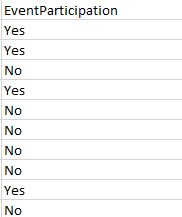
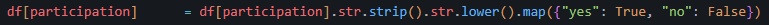
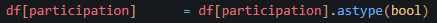

Project Day 3 - Data Pipeline Fault Post Mortem
Unfortunately a major oversight of mine was the lack of stratification within the EventParticipation field. I orginally assumed that it was a byproduct of the manufactured nature of the data but had failed to consider if it was actually due to an error in my data pipeline.
There are plenty of preventative measures to prevent this that I would likely have applied to a live pipeline in a containerized application.
Given the static nature of my pipeline being a CRM from a CSV I designed the functions to parse data, convert to pandas dataframe, and validate for type. This meant that I had no form of reporting or monitoring live data because data was not live. I overlooked the possiblility of improperly handled data since the high usability score on kaggle showing that the data were very polished had given me a false sense of confidence.
What went wrong
One of the fields was a boolean value, except it wasn't.
When handling the above column I accidentally automatically converted it to a boolean value in my mind when it was actually represented as a python string object. This has a unique property when met with the .astype(bool) since python will interpret the value as existing and then replace every value with true.
-
Correct
-  incorrect
- 
Fortunately I had already learned many things from this experience. Besides validating that data are correctly converted from source, I also learned many data analysis methods. This insight can continue to guide my understanding as the univariate analysis of all other fields is still accurate. I have already performed recalculations of bivariate analyses and kmeans analyses. I will likely proceed by permuting combinations of kmeans and features to optimize for the four metrics: Inertia, Silhouette Score, CH Index, DBI, and then iterating on model.
Tomorrow I look forwards to finalizing the features I will initially iterate with and developing either a discriminative two model architecture to analyze churn prediction or by meta modeling and iterating on features.
I may be undervaluing performance as a determinant for how I train my model. Explainability of features is only valuable insofar as they provide accurate predictions. In the abscense of exceptionally clear explainable features I need to trust more in the statistics. I will proceed with a looser criteria for explainability and instead defensively monitor unexplainable predictive features instead of proactively excluding them from my design. I still think that it is important to exclude very obviously unrelated fields such as name, contant information, donorID.